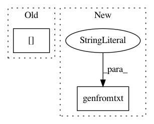

ef784a5b9046b1861de9d7ebba06e2d51a87c0cd,gluonbook/utils.py,,get_data_ch7,#,165
Before Change
true_w = [2, -3.4]
true_b = 4.2
features = nd.random.normal(scale=1, shape=(num_examples, num_inputs))
labels = true_w[0] * features[:, 0] + true_w[1] * features[:, 1] + true_b
labels += nd.random.normal(scale=0.01, shape=labels.shape)
return num_inputs, num_examples, true_w, true_b, features, labels
After Change
def get_data_ch7():
Get the data set used in Chapter 7.
data = np.genfromtxt("../data/airfoil_self_noise.dat", delimiter="\t")
data = (data - data.mean(axis=0)) / data.std(axis=0)
return nd.array(data[:, :-2]), nd.array(data[:,-1])
In pattern: SUPERPATTERN
Frequency: 3
Non-data size: 2
Instances
Project Name: d2l-ai/d2l-zh
Commit Name: ef784a5b9046b1861de9d7ebba06e2d51a87c0cd
Time: 2018-08-28
Author: muli@cs.cmu.edu
File Name: gluonbook/utils.py
Class Name:
Method Name: get_data_ch7
Project Name: matplotlib/matplotlib
Commit Name: 519392294bfdcb3a2642936fd6100a8677de0131
Time: 2018-02-06
Author: quantum.analyst@gmail.com
File Name: examples/ticks_and_spines/date_index_formatter.py
Class Name:
Method Name:
Project Name: matplotlib/matplotlib
Commit Name: ac731191e6a2955014b2ac9b7f7e3ddac8d92ee9
Time: 2018-12-29
Author: anntzer.lee@gmail.com
File Name: examples/ticks_and_spines/date_index_formatter2.py
Class Name:
Method Name: